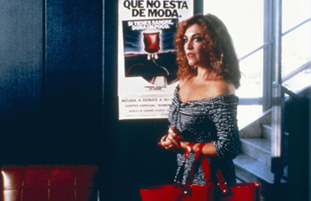
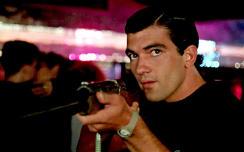
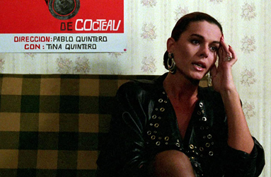
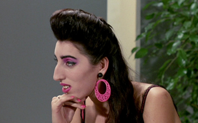
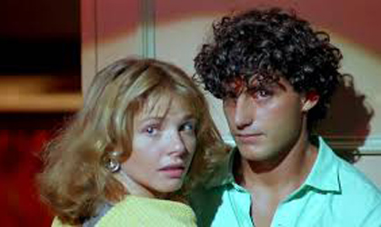
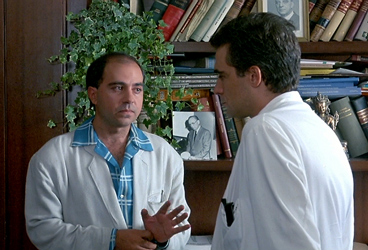
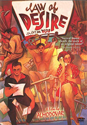
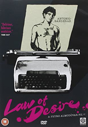
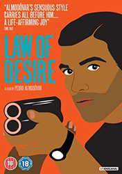
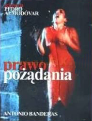

Carmen Maura - Tina Quintero
Antonio Banderas - Antonio Benítez


Bibiana Fernández - Ada's Mother
Rossy de Palma - TV Host


Victoria Abril - Girl kissing Miguel at party
Agustin Almodóvar - Lawyer

Pablo Quintero is a successful gay film and theatrical director whose latest work, The Paradigms of the Mussel, has just been released. At the opening night party, he discusses with his much younger lover, Juan, their summer plans. Pablo would stay in Madrid working on a new project, while Juan would leave for his hometown in the south to work in a bar and stay with his family. Pablo is in love with Juan, but he realizes that his love is not returned with the intensity he desires.
Pablo is very close to his transgender sister Tina, a struggling actress. Tina has recently been abandoned by her lesbian lover, a model, who left her in charge of her ten-year-old daughter Ada. Frustrated in her relationship with men, Tina dedicates her time to Ada, being a loving surrogate mother. The precocious Ada does not miss her cold mother. She is happier living with Tina and spending time with Pablo, on whom she has a childish crush. Tina, Ada and Pablo form an unusual family knit. Pablo looks after them both. For his next project, Pablo writes an adaptation of Cocteau's monologue-play, La Voix Humaine, to be performed by his sister.
At the play's opening night, Pablo meets Antonio, a young man who has been obsessed with the director since he watched the gay-themed film The Paradigms of the Mussel. At the end of the evening they go home together and have sex. For Antonio this is his first homosexual experience, while Pablo considers it just a lusty episode. Pablo is still in love with his long-time lover Juan. Antonio misunderstands Pablo's intentions and takes their encounter as a relationship. He soon reveals his possessive behaviour as a lover.
Antonio comes across a love letter addressed to Pablo, signed by Juan, but which in fact was written by Pablo to himself. The letter makes Antonio fall into a jealous rage, but he has to return to his native Andalusia where he lives with his domineering German mother. As he promised, Pablo sends Antonio a letter signed "Laura P", the name of a character inspired by his sister in a script he is writing. In his letter, Pablo tells Antonio that he loves Juan and intends to join him. However, Antonio, who is jealous and wants to get rid of Juan, gets there first. Antonio wants to possess everything that belongs to Pablo and tries to have sex with Juan. When Juan rebukes his advances, Antonio throws him off a cliff. After killing his rival, Antonio quickly heads for his hometown. Pablo becomes a suspect of the crime because the police have found in Juan's fist a piece of clothing that matches a distinctive shirt owned by Pablo. In fact, Antonio was wearing an exact replica when he killed Juan.
Pablo drives down to see his dead lover, he realizes that Antonio is responsible for the murder and confronts him about it. They have an argument and Pablo drives off pursued by the police. Blinded by tears, he crashes his car injuring his head. He awakes in a hospital suffering from amnesia. Antonio's mother shows the police the letters her son received signed "Laura P". The mysterious "Laura P" becomes the prime suspect, but the police cannot find her. Antonio returns to Madrid and, in order to get closer to Pablo who is still in the hospital, seduces Tina who believes his love to be genuine.
To help her brother recovering his memory, Tina tells him about their past. Born as a boy, in her adolescence she began an affair with their father. She ran away with him and had a sex change operation to please him, but he left her for another woman. When her incestuous relationship ended, Tina returned to Madrid, coinciding with the death of their mother, and was reunited with Pablo. Tina was grateful that Pablo did not judge her. Tina also tells him that she has found a lover. Pablo gradually begins to recover; he realizes that Tina's new love is Antonio and that she is in danger. He goes with the police to Tina's apartment where she is being held hostage by Antonio, who then threatens a bloodbath unless he can have an hour alone with Pablo. Pablo agrees and joins him. They make love and Antonio then commits suicide.



